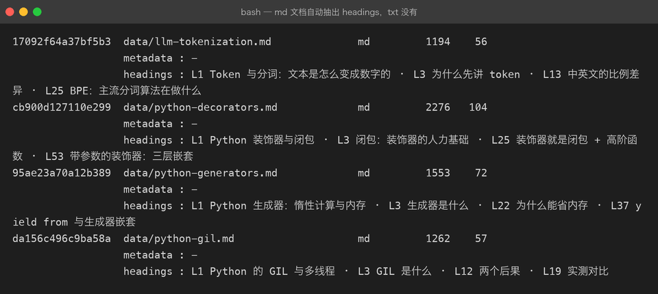
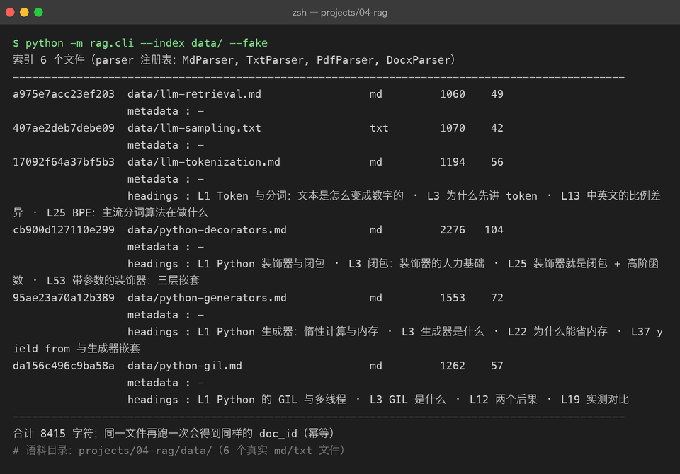

Project 04 — Chapter 01：Document Ingestion【文档摄入】
状态：✅ 已成文（文档先行，作为 src/ 落地设计依据） 对应代码：
src/rag/parsers.py（BaseParser + 四个格式适配器）、src/rag/document.py（Document）
1. 本章要解决什么问题
很多人以为 RAG 的第一步是「检索」，其实不是。RAG 的第一步是：把世界上乱七八糟的文档变成干净文本。
你的知识库输入不会只有 .txt。真实场景里有 PDF、Word、Markdown、网页导出的 HTML……它们长这样：
你以为： 拿到文档 = 拿到一段干净的字符串
实际上： PDF 是排版指令（"在第 3 页的 (x, y) 画这几个字"）
docx 是压缩包（一坨 XML 打包成 zip）
Markdown 是带语法噪音的文本（##、```、[]()）Garbage in, garbage out【垃圾进，垃圾出】——这句老话在 RAG 里格外贴切：解析阶段丢了一段、乱序了一栏、混进了一页页眉，后面的切分、向量化、检索全都是在放大这个错误，而且你几乎查不出来（检索结果"差不多但不准"，很难联想到是三个月前某个 PDF 解析坏了）。
本章目标：
设计一个格式适配器体系，把 .txt / .md / .pdf / .docx 统一解析成干净文本 + 元数据。
2. 为什么需要这个知识
RAG 流水线的第一环决定了整个系统的上限：
解析质量 → 切分质量 → 向量质量 → 检索质量 → 回答质量每一环都只能继承上一环的垃圾，无法自救。所以摄入阶段要守住两条底线：
- 不丢信息：正文、标题、页码都要留下（页码后面检索溯源要用）。
- 不多噪音：页眉、页脚、乱码、控制字符要在源头清掉，不要留给下游。
同时，格式会不断增加（说不定哪天要支持 epub、HTML）。如果写成一坨 if ext == ".pdf": ... elif ext == ".docx": ...，每加一种格式就要改老代码。Java 里这叫开闭原则：对扩展开放、对修改关闭。用格式适配器（parser per format）来解决。
3. 核心概念
3.1 统一的产物：Document dataclass
不管什么格式，解析器的输出都是同一个结构——这是整条流水线的"通用货币"：
# src/rag/document.py
from dataclasses import dataclass, field
@dataclass
class Document:
doc_id: str # 内容哈希，见 3.3
source: str # 文件路径 / 来源标识
text: str # 解析后的干净正文
metadata: dict = field(default_factory=dict)
# metadata 约定存：format / size_bytes / page_count / parsed_atmetadata 不是可选项，是检索溯源的生命线。 检索命中一段文字后，用户会问"这出自哪里？"——没有 source 和页码，RAG 就成了无出处的一本正经胡说。
3.2 格式适配器：BaseParser + 四个实现
Java 里你写过策略模式或 SPI（java.nio.file.spi.FileSystemProvider 就是这个味道）：定义接口，每种实现处理一种情况，运行时按 key 选择。Java 里叫 Parser 接口 + 一组 @Component 实现，Python 里用 ABC + 注册表字典，思路完全一样：
# src/rag/parsers.py
from abc import ABC, abstractmethod
from pathlib import Path
class BaseParser(ABC):
"""所有格式解析器的抽象基类：输入文件路径，输出 Document。"""
supported_extensions: tuple[str, ...] = ()
@abstractmethod
def parse(self, path: Path) -> Document:
...
@classmethod
def supports(cls, path: Path) -> bool:
return path.suffix.lower() in cls.supported_extensions四个实现各管一种格式，各自封装该格式的"脏活"：
import hashlib
import re
import time
from dataclasses import dataclass, field
from pathlib import Path
from pypdf import PdfReader
from docx import Document as DocxDocument # python-docx
def _make_doc(path: Path, text: str, extra: dict) -> Document:
clean = text.replace("\x00", "").strip()
return Document(
doc_id=hashlib.sha256(clean.encode("utf-8")).hexdigest()[:16],
source=str(path),
text=clean,
metadata={
"format": path.suffix.lower().lstrip("."),
"size_bytes": path.stat().st_size,
"parsed_at": time.strftime("%Y-%m-%d %H:%M:%S"),
**extra,
},
)
class TxtParser(BaseParser):
supported_extensions = (".txt",)
def parse(self, path: Path) -> Document:
text = path.read_text(encoding="utf-8", errors="strict")
return _make_doc(path, text, {})
class MdParser(BaseParser):
supported_extensions = (".md", ".markdown")
# Markdown 是纯文本的超集，但有两个必须做的预处理：
# 1) 保留代码围栏（后续切分时不能按句号切开代码块）
# 2) 标题层级是天然语义边界，保留到 metadata 供 02 章使用
_HEADING_RE = re.compile(r"^(#{1,6})\s+(.*)$")
def parse(self, path: Path) -> Document:
raw = path.read_text(encoding="utf-8", errors="strict")
headings: list[dict] = []
for lineno, line in enumerate(raw.splitlines(), start=1):
m = self._HEADING_RE.match(line)
if m:
headings.append({"level": len(m.group(1)), "title": m.group(2).strip(), "line": lineno})
return _make_doc(path, raw, {"headings": headings})
class PdfParser(BaseParser):
supported_extensions = (".pdf",)
def parse(self, path: Path) -> Document:
reader = PdfReader(str(path))
parts: list[str] = []
for i, page in enumerate(reader.pages, start=1):
page_text = (page.extract_text() or "").replace("\x00", "").strip()
parts.append(f"[第 {i} 页]\n{page_text}") # 页码内联，切分时可携带
full = "\n\n".join(parts)
return _make_doc(path, full, {"page_count": len(reader.pages)})
class DocxParser(BaseParser):
supported_extensions = (".docx",)
def parse(self, path: Path) -> Document:
doc = DocxDocument(str(path))
lines = [p.text for p in doc.paragraphs if p.text.strip()]
return _make_doc(path, "\n\n".join(lines), {})
3.3 解析器注册表与入口
用注册表代替 if-elif，新增格式 = 新增一个类 + 注册一行，老代码零改动：
PARSERS: list[type[BaseParser]] = [MdParser, DocxParser, PdfParser, TxtParser]
def ingest(path: str | Path) -> Document:
path = Path(path)
if not path.is_file():
raise FileNotFoundError(f"文件不存在: {path}")
for parser_cls in PARSERS:
if parser_cls.supports(path):
return parser_cls().parse(path)
raise ValueError(f"不支持的格式: {path.suffix!r}（支持 .txt/.md/.pdf/.docx）")3.4 doc_id 为什么用内容哈希
Java 里你可能习惯用 UUID 或自增 ID。但知识库会重复摄入同一个文件（重建索引、增量更新），用文件名或 UUID 做主键会产生两条一样的记录。对内容做 SHA-256 后取前 16 位：
- 同一个文件重复摄入 → 同一个
doc_id→ 天然幂等（upsert 覆盖）； - 文件内容改了 →
doc_id变化 → 新旧版本可以区分。
Java 里这类似数据库用 ON DUPLICATE KEY UPDATE 依赖业务唯一键，Python 里直接让 ID 从内容派生，更省心。

4. 动手实现（设计稿）
以下代码将在 src/rag/ 落地时实现，现在当设计稿读。目标文件结构：
src/rag/
├── document.py # Document dataclass
├── parsers.py # BaseParser + Txt/Md/Pdf/Docx + ingest() 入口
└── __init__.py关键实现思路（补全上面的骨架）：
- TxtParser 的 encoding 兜底：先尝试 utf-8，捕获
UnicodeDecodeError后回退gbk，再不行回退latin-1（保证永远能读出来，宁可出噪音也别崩）。errors="strict"的版本是教学简化，落地版写成三层回退：
def _read_text_fallback(path: Path) -> str:
for enc in ("utf-8", "gbk", "latin-1"):
try:
return path.read_text(encoding=enc)
except UnicodeDecodeError:
continue
raise ValueError(f"无法解码文件（尝试过 utf-8/gbk/latin-1）: {path}")- PDF 页眉页脚清洗：解析完所有页后做一次统计——出现在超过 60% 页面开头/结尾且长度 < 40 字符的行，判定为页眉页脚，整批删掉。这是"用统计对抗噪音"，比硬编码页码可靠。
- docx 表格：
python-docx的doc.paragraphs不含表格内容，落地版要遍历doc.tables，把每个单元格用|拼接成行文本，否则表格信息全部丢失。
- Markdown 代码围栏标记：
MdParser在 ``` 围栏前后插入哨兵注释，供 02 章的切分器识别"这段是代码，不许按句号拆"。
- 依赖安装：
pip install pypdf python-docx5. 踩坑清单
坑 1：Windows 产出的 txt 用 utf-8 读直接炸
- 现象：
UnicodeDecodeError: 'gbk' codec can't decode（或反过来 utf-8 报错），文件明明是正常中文文档。 - 原因：Windows 记事本/某些老系统默认编码是 gbk，macOS/Linux 默认 utf-8。文本文件没有自我声明的编码，扩展名 .txt 不代表 utf-8。
- 正确做法：永远显式传
encoding=，并做三层回退（utf-8 → gbk → latin-1）或用chardet探测。Java 里new FileReader(file)也踩同一个坑（依赖平台默认编码），所以 Java 17 引入了Files.readString(path, Charset)强制显式传参——Python 同理，open()不传 encoding 是欠账。
坑 2：PDF 提取出 \x00，后续 embedding API 直接 400
- 现象：本地解析正常，调 embedding 接口时报
invalid request，错误信息完全没提哪个字符有问题。 - 原因：某些 PDF 的字体编码表异常，
pypdf提取出的文本里混入 null 字符\x00，部分 API 侧校验会拒绝。 - 正确做法：在
_make_doc的统一出口处text.replace("\x00", "")，并且可以做一层更狠的清洗：删掉所有 C0 控制字符（保留\n和\t）。清洗逻辑放在统一出口，而不是各 parser 里各写一遍——入口多个、出口只有一个，这是防漏的关键。
坑 3：用文件名当 doc_id，同名的两个文件互相覆盖
- 现象：
notes/README.md和project-b/README.md都叫 README，入库后只剩一条；或者文件改了名，同一段内容被存了两份。 - 原因：文件名是"位置信息"不是"内容身份"，重命名、同名目录都会让它失效。
- 正确做法：
doc_id = sha256(清洗后的正文)[:16]，文件名只放进metadata["source"]做展示。
坑 4：pypdf 把双栏 PDF 拆成"左右交错"的乱序文本
- 现象：解析出的文字内容是对的，但读起来像这样：第一行是左栏前半句，第二行是右栏前半句……检索命中后给模型看，模型的理解完全错乱。
- 原因：
extract_text()按几何坐标的行序输出，双栏排版在同一行高度上有左右两段文字。 - 正确做法：先用
page.extract_text(extraction_mode="layout")尝试保布局模式；仍然乱序就换pdfplumber按 x 坐标分栏；实在不行只对纯文本型文档做 RAG，扫描件交给 OCR 流水线（超出本章范围，先知道有这条路）。
6. 自检清单
- [ ] 能说清 RAG 第一步为什么是摄入而不是检索（垃圾进 = 垃圾出）
- [ ] 能写出
BaseParserABC 并解释它对应 Java 的哪种模式（策略 / SPI） - [ ] 四种格式各说出一个解析层面的坑（md 代码围栏 / pdf 双栏 / docx 表格 / txt 编码）
- [ ]
Document的 metadata 里存了什么，检索溯源时分别用在哪里 - [ ] 能解释 doc_id 用内容哈希而不是文件名/UUID 的理由
- [ ] 清洗逻辑（控制字符、编码回退）放在统一出口而不是各 parser 内
回到项目主页：../README.md
下一章：02-chunking.md —— 拿到了整篇干净文本，为什么还要把它切碎？